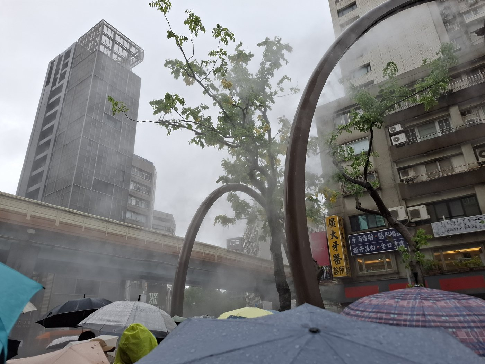

1895
大灣河道
自然匯流的三條水路穿過東區水田，在今日 SOGO 後方與復興南路交會成大灣埤塘水系。

週五午後的傾盆大雨，讓遠東百貨忠孝館後方這條 4,500 平方公尺的「瑠公綠廊」變成一場無可取代的工務實測現場：紙本講義臨時換成手舉護貝 QR Code、腳下親眼看穿透水混凝土與壓花瀝青的排水反差、雨天自動休眠的水霧系統被設計團隊特地手動喚醒，還碰巧遇上開幕第三天的漂流木動物園。
隨著臺北商業重心一度東移至信義計畫區與西側中山商圈，昔日繁華的頂好商圈需要一條重新把人留下來的步行軸線。臺北市政府自 2019 年提出「東區發展振興計畫」，而「瑠公綠廊人行環境改造工程」正是全計畫率先完工的第一段示範工程。
本案透過人行環境改善、綠帶整合及街道空間優化，提升步行舒適性與都市景觀品質，重新串聯商圈、人行動線與公共空間，打造兼具宜行性、友善性與都市美學的綠色廊道。也因精準翻轉了城市後巷與車本空間的限制，作品不僅在 2025 臺北設計獎「臺北城市設計選拔」榮獲台灣設計聯盟特別獎，更接連拿下第 24 屆公共工程金質獎土木類特優與台灣景觀大獎肯定。
晴天看得到綠意與座椅，但下面這六件事，唯有在這個下雨的週五午後踏進現場才碰得上。
午後兩點四十分過後，東區雨勢轉急。原訂在遠東百貨忠孝館門口的報到集合，改為往後穿進瑠公公園的白色棚架下躲雨。長椅上早已排好一盒盒活動茶點，工作人員用黃色半透明雨布把紙盒嚴嚴實實地蓋了起來，參加者各自收傘、抖落雨水，站在白柱涼亭裡等開場。
三點整，協辦單位財團法人中國生產力中心的承辦人方威先向大家致意，感謝大家在滂沱大雨中仍準時赴約；接著把麥克風交給負責這座工程景觀設計的台灣世曦工程顧問團隊代表。沒想到團隊開場第一句先向大家致歉：原本沒料到會下這麼大的雨，怕紙本圖冊一發出去立刻糊成一團，只好臨時印出一張護貝 A4 的 QR Code。
於是出現了這場走讀最有意思的第一幅畫面——承辦人一邊拎著擴音器背包、一邊高高舉起護貝紙牌，後頭的設計師拿著麥克風開口講解，亭子下的市民紛紛舉起手機對準半空中掃碼，雨滴就在頭頂的白色格柵棚架間滴滴答答地落下來。
跨過巷口走進 SOGO 忠孝館後方，設計師立刻拋出一個多數臺北人都會誤會的身世之謎：「大家都叫這裡瑠公綠廊，但它最早其實不算是瑠公圳，而是天然形成的大灣河道與大灣埤塘。」團隊在翻查古地圖後發現，早年共有三條河道在此匯集，穿過今日復興南路往對面廟宇前的三叉點流去，只是後來水系整併進瑠公圳下游，才一路背負「瑠公」之名。
更讓人好奇的是：既然地下就是舊水道，為什麼不像台中柳川或韓國清溪川那樣直接把蓋子掀開、做一條親水明渠？設計師指著兩側貼得極近的百貨牆面與住宅大樓苦笑回答：第一，這條帶狀綠廊在東區精華區「寸土寸金」，寬度極窄，一旦開蓋挖出溝渠，反而會再次切斷百貨後門與住戶、行人之間的聯繫；第二，當年 1985 年加蓋的兩條排水大箱涵就埋在地面下僅 60 到 80 公分處，而且早期圖資並不精確，工程一挖開才發現箱涵與管線密布，根本沒有重新降挖、或讓樹根直接往地底深扎的空間。
自然匯流的三條水路穿過東區水田，在今日 SOGO 後方與復興南路交會成大灣埤塘水系。
大灣與瑠公合併為「公共埤圳瑠公圳組合」，大灣正式納入瑠公圳管理範疇；周邊街廓漸起。
瑠公農田水利會租出 50 年地上權（1983–2033）興建太平洋 SOGO，市府將水溝加蓋成停車場。
配合東區發展振興計畫，把長期佔用的機車格與排班計程車退場，重塑為人本步行綠廊。
想把後巷還給行人，最難的從來不是畫設計圖，而是把車位挪走。改造前，這裡夾在 SOGO 後門與住宅之間，是百貨員工與附近上班族「早上九點就停滿、一停一整天」的機車停車場——轉換率低到連來逛街的市民都停不進去；同一時間，SOGO 排班計程車一路從忠孝東路轉進巷底，動輒排上八、九台，整個空間幾乎全被引擎與排氣占據。
經過多次地方說明會，以及光武里韓修和里長與市府跨局處穿梭溝通，終於拍板：既有停車格數並未消失，而是退移至市民大道下重新規劃；計程車排班區則改設到 SOGO 側邊小巷，一次只能容納約兩台車，並由百貨派員在忠孝東路上控管引導。北側巷道留給社區車輛與 3 格裝卸貨車位；南側緊鄰百貨這條原寬 5.5 公尺的車道，則直接縮減 1.5 公尺並封閉常態車行，只留下供緊急消防車臨時進入的寬度。
既然無法把河水挖出來，團隊改用空氣裡的濕度與街道家具的尺度讓空間「涼」下來。這座綠廊沿著花臺與三個水霧圓環設有細緻的自來水高壓水霧系統——設計設定在早上十點到晚上八點間，每整點自動噴灑 5 到 10 分鐘替行人調節微氣候。但因為機器內建雨水／濕度感應器，遇到這天下大雨，系統原本早就乖乖休眠了。
「大家難得冒雨來，我等一下手動把它打開讓各位感受一下！」話才說完不久，花臺低處與半空中三座深色弧形光環同時嘶嘶噴出細白水霧，瞬間在雨簾裡疊出一層飄渺的白煙。這幕雨水與水霧同框的奇景，晴天看不見雨勢、一般雨天機器不會噴，只有參加這場走讀的人剛好撞個正著。
水霧噴頭從低處斜向步道吹送，水粒子極細、沾身不濕；花臺下方還藏了沖孔板與燈條，夜裡看去整座花臺就像輕輕懸浮在藍色水波紋之上。
這排曲線混凝土座椅寬約 90 公分一顆，採臺灣公園少見的工廠鋼模橫躺灌漿＋現場吊裝。當初開兩套模具仍對不齊接縫，廠商乾脆用同一套鋼模逐顆翻製，並刻意做出微斜角度才順利脫模，品質穩定到成為拿下金質獎的一大亮點。
百貨最初很擔心坐椅太舒適會讓群眾徹夜聚眾喧嘩，因此住戶側保留穿越動線、商業側才設休憩區：除可快閃站著喝咖啡的弧形高腳吧台，椅面更選用鍍鋅鋼加氟碳烤漆網孔材質，夏天直曬不會像混凝土座面燙得像做「岩盤浴」，中間還留出推嬰兒車與輪椅的停靠空檔。
走到綠廊後段，灌木叢裡竟然探出一頭昂首的馬與一頭鹿！原來就在這場走讀前三天（6 月 2 日至 7 月 30 日），遠東 SOGO 忠孝館攜手光武里與東區商圈發展協會，邀請漂流木藝術家張弘欣把「漂流木永續創藝」綠廊特展搬進這裡——讓山海之間的漂流朽木化身為都市叢林裡的《木躍奔馬》與鹿群，成了這趟六月走讀才遇得到的期間限定風景。
有趣的是，這座綠廊之所以能維持得不像多數完工兩年後就顯疲態的公園，靠的是一套少見的三方共管默契。甚至因為水霧系統每小時自動幫植物補水一次，這裡的多層次灌木與蕨類長得比臺北其他公園都要「澎湃」，讓地方里長常得打電話請公園處派人修剪；而在星巴克前的立食吧台旁，這場走讀一路聊到將近四點，市民們拿著雨傘繼續追問預鑄模具造價、噴頭阻塞維護與未來大安路銜接工程，把公共建設幕後的眉角問個徹底才各自散去。
韓修和里長幾乎每周緊盯空間狀況與植栽生長；廣場更預留了活動專用電源，周末辦市集活動再也不用叫吵雜的發電車。
認養鄰接空間清潔與日常巡管，配合側巷計程車交管，也主動策劃 6 月漂流木特展等季展，讓「後門」真正成為「後院」。
負責大樹颱風前修枝、水霧系統維管與植栽養護；工程群組搭配市民 1999 即時回報機制，讓精華區公園維持高水準狀態。
走到尾聲，一位愛看公共建設的市民忍不住對設計師說：「我覺得把車道縮減 1.5 公尺是一件很偉大的事情。」設計師笑著回應，其實地方住戶原本也討厭排班車潮與違停，只是過去沒人帶頭重整；一旦開始做了，就會發現只要有人願意在臺灣嘗試預鑄工法與減法設計，下一個工程團隊才會跟著往前邁步。
從星巴克前這場雨中的最後問答散開時，雨勢依舊沒停，但這條原本誰都不太想多停留的百貨後巷，已經悄悄讓人想在某個晴朗夜晚再回來——看看藍色水波紋在地上流動的樣子。
有些風景要天氣正好才美，但公共工程好不好用，偏偏要一場午後大雨才能檢驗得最透徹。
誰也沒預料到六月初的這場大雨，卻因此留下撐傘在涼亭舉牌掃碼、與雨中手動喚醒水霧光環的畫面，成了再辦十場晴天場次也複製不來的記憶。
從這 4,500 平方公尺開始，一路接向正在施工的大安路一段人本工程、龍門廣場與仁愛圓環——站在這裡，正好看到東區步行軸線起跑的第一棒。
為什麼不掀開河道、為什麼只用單一鋼模、為什麼商業側才放高腳吧台、甚至公園處與 SOGO 怎麼分頭顧花顧燈，全是站在實體前才聽得到的真實眉角。
頭頂正好掛著六月盛開的阿勃勒黃花，花臺裡住進展期僅到七月底的張弘欣漂流木動物雕塑——城市裡的自然與藝術，永遠只在當下同框。